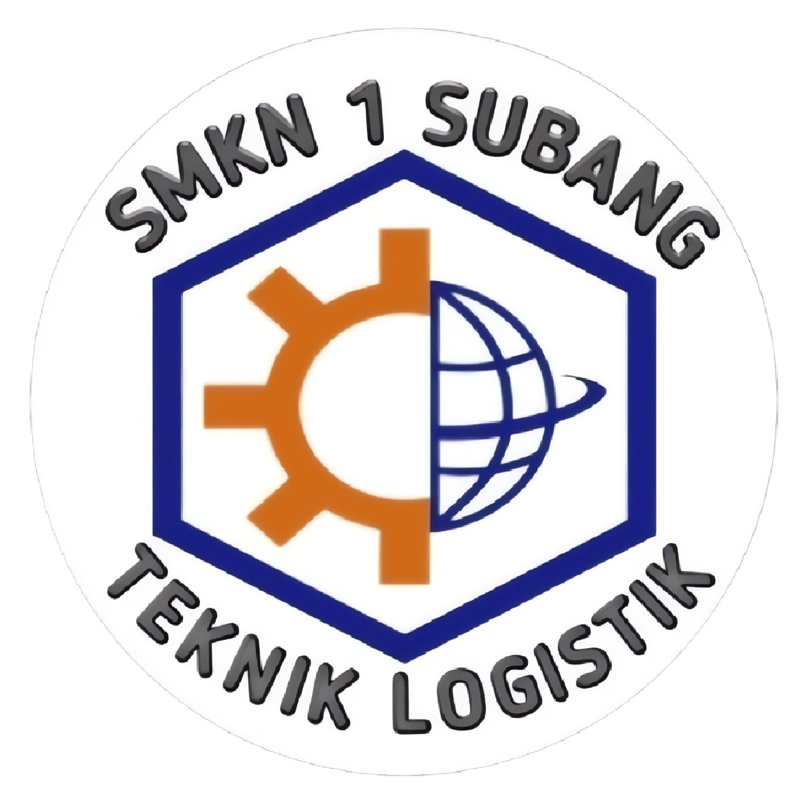

Teknik logistik
Pengantar
Logistik adalah bagian dari proses rantai suplai (supply chain) yang berfungsi merencanakan, melaksanakan, mengontrol secara efektif, efisien proses pengadaan, pengelolaan, penyimpanan barang, pelayanan dan informasi mulai dari titik awal (point of origin) hingga titik konsumsi (point of consumption) dengan tujuan memenuhi kebutuhan konsumen.
Teknik Logistik merupakan salah satu keilmuan dari Teknik Industri. Teknik Logistik mengutamakan perencanaan, pemecahan masalah dengan prinsip keteknikan menggunakan ilmu-ilmu eksakta.
Kompetensi Keahlian Teknik Logistik SMK Negeri 1 Subang menyiapkan lulusan yang menguasai ilmu pengetahuan dan teknologi di bidang logistik yang beriman kepada Tuhan Yang Maha Esa, profesional, terampil, jujur, disiplin dan memiliki jiwa wirausaha.
Kompetensi Dasar
- Gambar Teknik
- Penanganan Material dan Sikap Kerja
- Pengendalian Persediaan
- Pengendalian Dokumen Administrasi Gudang
- Pergudangan
- Material Handling
- Equipment Logistik Multimoda
- Produk Kreatif dan Kewirausahaan
Tujuan Pembelajaran
Secara khusus tujuan Kompetensi Keahlian Teknik Logistik adalah membekali peserta didik dengan keterampilan, pengetahuan dan sikap agar kompeten dalam:
- Bekerja baik secara mandiri atau mengisi lowongan pekerjaan yang ada di dunia usaha dan dunia industri sebagai tenaga kerja tingkat menengah dalam bidang Teknik Logistik.
- Memilih karir, berkompetisi, dan mengembangkan sikap profesional dalam bidang Teknik Logistik.
- Memiliki kompetensi sesuai jenjang dalam bidang Teknik Logistik.
Tenaga Pengajar
- Ari Jafitriah S.Pd
- Faisal Akbar S.E
- Risky Hakiki S.T